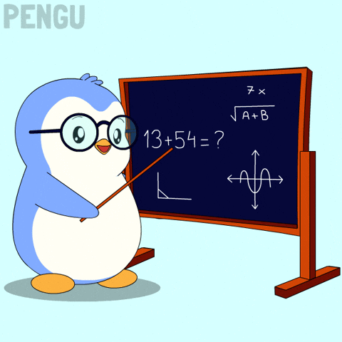

Curiosidades sobre Matemática
1. O número zero só foi inventado na Índia, há cerca de 1.500 anos.
2. Existem infinitos números primos — nunca acabam!
3. O número π (pi) nunca termina e nunca se repete.
4. O símbolo “=” foi criado em 1557 pelo matemático Robert Recorde.
5. A palavra “matemática” vem do grego “máthema”, que significa conhecimento ou aprendizagem.
6. A sequência de Fibonacci aparece em plantas, conchas e até no corpo humano.